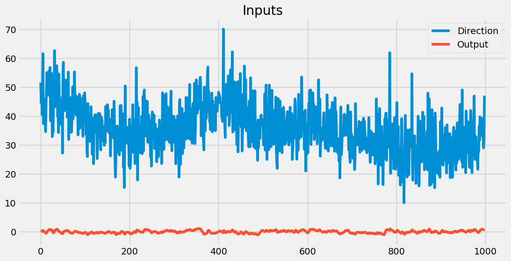
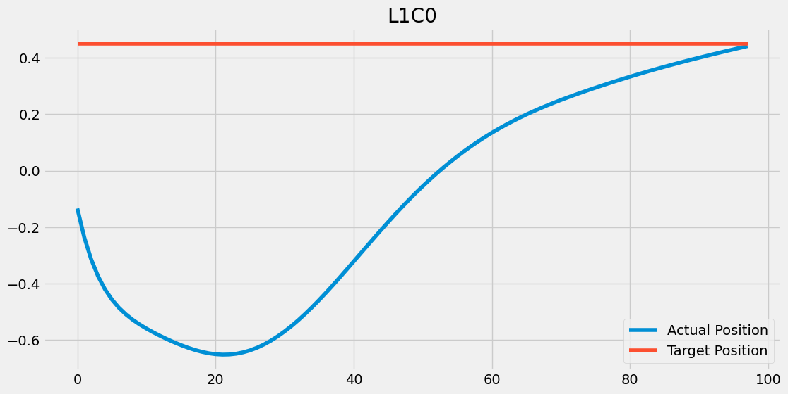

The autoreload extension is already loaded. To reload it, use:
%reload_ext autoreloadThe autoreload extension is already loaded. To reload it, use:
%reload_ext autoreloadThe PCTExamples class is designed to load a PCTHierarchy configuration file and provide various methods to interact with the hierarchy.
PCTExamples (config_file, min=True, early_termination=False, history=False)
PCTExamples class provides methods to load a PCT hierarchy from a configuration file, summarize the hierarchy, get the configuration, draw the hierarchy, run the hierarchy for a specified number of steps, and close the environment. Attributes: hierarchy (PCTHierarchy): The loaded PCT hierarchy. env (Environment): The environment associated with the PCT hierarchy.
# Example of how to use the PCTExamples class
pct = PCTExamples('testfiles/WindTurbine/ga--1362.401-s003-4x3-m005-WT0538-bddf277b0f729cc630efacf91b9f494f.properties', history=True)
pct.summary()
pct.run(1000)
print(pct.get_history_keys())
history_data = pct.set_history_data()
fig = pct.plot_single(plot={'plot_items': {'IWD': 'Direction', 'Action1sgsm': 'Output'}, 'title': 'Inputs'}, history_data=history_data)**************************
pcthierarchy PCTHierarchy [1, 2, 3, 2] 8a74d3b4-be2b-11ef-8c8b-8cf8c5b8669e
--------------------------
PRE: WindTurbine WindTurbine | 0 | links Action1sgsm
IYE IndexedParameter | index 1 | -0.0 | links WindTurbine
IWD IndexedParameter | index 2 | 0.0 | links WindTurbine
IWS IndexedParameter | index 4 | 0.0 | links WindTurbine
Level 0 Cols 1
L0C0 PCTNode 8a74d3b4-be2b-11ef-8c8b-8cf8c5b8669e
----------------------------
REF: RL0C0sm SmoothWeightedSum | weights [0.54, -0.3] smooth 0.38 | -0.0 | links OL1C0sm OL1C1sm
PER: PL0C0sm SmoothWeightedSum | weights [-1.56, -0.12, 0.6] smooth 0.45 | 0.0 | links IYE IWD IWS
COM: CL0C0 Subtract | -0.0 | links RL0C0sm PL0C0sm
OUT: OL0C0sm SmoothWeightedSum | weights [-0.11] smooth 0.44 | 0.0 | links CL0C0
----------------------------
Level 1 Cols 2
L1C0 PCTNode 8a74d3b4-be2b-11ef-8c8b-8cf8c5b8669e
----------------------------
REF: RL1C0sm SmoothWeightedSum | weights [0.03, 0.87, 0.37] smooth 0.70 | 0.0 | links OL3C0sm OL3C1sm OL2C2sm
PER: PL1C0sm SmoothWeightedSum | weights [0.71] smooth 0.39 | 0.0 | links PL0C0sm
COM: CL1C0 Subtract | -0.0 | links RL1C0sm PL1C0sm
OUT: OL1C0sm SmoothWeightedSum | weights [-0.14] smooth 0.94 | 0.0 | links CL1C0
----------------------------
L1C1 PCTNode 8a74d3b4-be2b-11ef-8c8b-8cf8c5b8669e
----------------------------
REF: RL1C1sm SmoothWeightedSum | weights [-0.82, -0.18, -0.92] smooth 0.78 | 0.0 | links OL3C0sm OL3C1sm OL2C2sm
PER: PL1C1sm SmoothWeightedSum | weights [-0.56] smooth 0.34 | -0.0 | links PL0C0sm
COM: CL1C1 Subtract | 0.0 | links RL1C1sm PL1C1sm
OUT: OL1C1sm SmoothWeightedSum | weights [0.16] smooth 0.54 | 0.0 | links CL1C1
----------------------------
Level 2 Cols 3
L2C01 PCTNode 8a74d3b4-be2b-11ef-8c8b-8cf8c5b8669e
----------------------------
REF: RL2C0sm SmoothWeightedSum | weights [0.78, 0.31] smooth 0.35 | 0.0 | links OL3C0sm OL3C1sm
PER: PL2C0sm SmoothWeightedSum | weights [-0.26, 0.03] smooth 0.83 | -0.0 | links PL1C0sm PL1C1sm
COM: CL2C0 Subtract | 0.0 | links RL2C0sm PL2C0sm
OUT: OL2C0sm SmoothWeightedSum | weights [0.48] smooth 0.81 | 0.0 | links CL2C0
----------------------------
L2C11 PCTNode 8a74d3b4-be2b-11ef-8c8b-8cf8c5b8669e
----------------------------
REF: RL2C1sm SmoothWeightedSum | weights [-0.46, 0.92] smooth 0.49 | 0.0 | links OL3C0sm OL3C1sm
PER: PL2C1sm SmoothWeightedSum | weights [-1.41, -0.45] smooth 0.73 | -0.0 | links PL1C0sm PL1C1sm
COM: CL2C1 Subtract | 0.0 | links RL2C1sm PL2C1sm
OUT: OL2C1sm SmoothWeightedSum | weights [1.59] smooth 0.52 | 0.0 | links CL2C1
----------------------------
L2C2 PCTNode 8a74d3b4-be2b-11ef-8c8b-8cf8c5b8669e
----------------------------
REF: RL2C2sm SmoothWeightedSum | weights [0.73, 0.46] smooth 0.27 | 0.0 | links OL3C0sm OL3C1sm
PER: PL2C2sm SmoothWeightedSum | weights [0.22, -0.03] smooth 0.83 | 0.0 | links PL1C0sm PL1C1sm
COM: CL2C2 Subtract | -0.0 | links RL2C2sm PL2C2sm
OUT: OL2C2sm SmoothWeightedSum | weights [0.26] smooth 0.08 | -0.0 | links CL2C2
----------------------------
Level 3 Cols 2
L3C0 PCTNode 8a74d3b4-be2b-11ef-8c8b-8cf8c5b8669e
----------------------------
REF: RL3C0v Variable | -0.2629598007970895
PER: PL3C0sm SmoothWeightedSum | weights [0.01, 0.26, 0.97] smooth 0.98 | -0.0 | links PL2C0sm PL2C1sm PL2C2sm
COM: CL3C0 Subtract | -0.0 | links RL3C0v PL3C0sm
OUT: OL3C0sm SmoothWeightedSum | weights [0.94] smooth 0.96 | -0.0 | links CL3C0
----------------------------
L3C1 PCTNode 8a74d3b4-be2b-11ef-8c8b-8cf8c5b8669e
----------------------------
REF: RL3C1v Variable | 0.740559685914173
PER: PL3C1sm SmoothWeightedSum | weights [-0.59, 0.13, -0.44] smooth 0.97 | -0.0 | links PL2C0sm PL2C1sm PL2C2sm
COM: CL3C1 Subtract | 0.0 | links RL3C1v PL3C1sm
OUT: OL3C1sm SmoothWeightedSum | weights [1.58] smooth 0.52 | 0.0 | links CL3C1
----------------------------
POST: Action1sgsm SigmoidSmoothWeightedSum | weights [0.32] smooth 0.56 range 3.11 slope 10.53 | 0.0 | links OL0C0sm
**************************
['WindTurbine', 'reward', 'IYE', 'IWD', 'IWS', 'Action1sgsm', 'RL0C0sm', 'PL0C0sm', 'CL0C0', 'OL0C0sm', 'RL1C0sm', 'PL1C0sm', 'CL1C0', 'OL1C0sm', 'RL1C1sm', 'PL1C1sm', 'CL1C1', 'OL1C1sm', 'RL2C0sm', 'PL2C0sm', 'CL2C0', 'OL2C0sm', 'RL2C1sm', 'PL2C1sm', 'CL2C1', 'OL2C1sm', 'RL2C2sm', 'PL2C2sm', 'CL2C2', 'OL2C2sm', 'RL3C0v', 'PL3C0sm', 'CL3C0', 'OL3C0sm', 'RL3C1v', 'PL3C1sm', 'CL3C1', 'OL3C1sm']
print(pct.get_history_keys())
history_data = pct.set_history_data()
# pct.plot_history(plots='scEdges', title_prefix='')
fig = pct.plot_single(plot= {'plot_items': {'PL1C0': 'Actual Position', 'RL1C0': 'Target Position'}, 'title': 'L1C0'}, history_data=history_data)['MountainCarContinuousV0', 'reward', 'IP', 'IV', 'Action1', 'RL0C0', 'PL0C0', 'CL0C0', 'OL0C0', 'RL0C1', 'PL0C1', 'CL0C1', 'OL0C1', 'RL1C0', 'PL1C0', 'CL1C0', 'OL1C0']